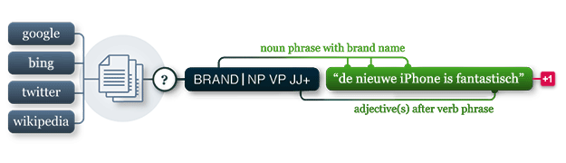

pattern.nl
The pattern.nl module contains a fast part-of-speech tagger for Dutch (identifies nouns, adjectives, verbs, etc. in a sentence), sentiment analysis, and tools for Dutch verb conjugation and noun singularization & pluralization.
It can be used by itself or with other pattern modules: web | db | en | search | vector | graph.

Documentation
The functions in this module take the same parameters and return the same values as their counterparts in pattern.en. Refer to the documentation there for more details.
Noun singularization & pluralization
For Dutch nouns there is singularize() and pluralize(). The implementation is slightly less robust than the English version (accuracy 91% for singularization and 80% for pluralization).
>>> from pattern.nl import singularize, pluralize
>>>
>>> print singularize('katten')
>>> print pluralize('kat')
kat
katten Verb conjugation
For Dutch verbs there is conjugate(), lemma(), lexeme() and tenses(). The lexicon for verb conjugation contains about 4,000 common Dutch verbs. For unknown verbs it will fall back to a rule-based approach with an accuracy of about 81%.
>>> from pattern.nl import conjugate
>>> from pattern.nl import INFINITIVE, PRESENT, SG
>>>
>>> print conjugate('ben', INFINITIVE)
>>> print conjugate('ben', PRESENT, 2, SG)
zijn
bent Attributive & predicative adjectives
Dutch adjectives followed by a noun inflect with an -e suffix (e.g., braaf → brave kat). You can get the base form with the predicative() function, or vice versa with attributive(). Accuracy is 99%.
>>> from pattern.nl import attributive, predicative
>>>
>>> print predicative('brave')
>>> print attributive('braaf')
braaf
brave Sentiment analysis
For opinion mining there is sentiment(), which returns a (polarity, subjectivity)-tuple, based on a lexicon of adjectives. Polarity is a value between -1.0 and +1.0, subjectivity between 0.0 and 1.0. The accuracy is around 82% (P 0.79, R 0.86) for book reviews:
>>> from pattern.nl import sentiment
>>> print sentiment('Een onwijs spannend goed boek!')
(0.69, 0.90) Parser
For parsing there is parse(), parsetree() and split(). The parse() function annotates words in the given string with their part-of-speech tags (e.g., NN for nouns and VB for verbs). The parsetree() function takes a string and returns a tree of nested objects (Text → Sentence → Chunk → Word). The split() function takes the output of parse() and returns a Text. See the pattern.en documentation (here) how to manipulate Text objects.
>>> from pattern.nl import parse, split
>>>
>>> s = parse('De kat zit op de mat.')
>>> for sentence in split(s):
>>> print sentence
Sentence('De/DT/B-NP/O kat/NN/I-NP/O zit/VBZ/B-VP/O op/IN/B-PP/B-PNP'
'de/DT/B-NP/I-PNP mat/NN/I-NP/I-PNP ././O/O')The parser is built on Jeroen Geertzen's Dutch language model. The accuracy is around 91%. The original WOTAN tagset is mapped to Penn Treebank. If you need to work with the original tags you can also use parse() with an optional parameter tagset="WOTAN".
Reference: Geertzen, J. (2010). Brill-NL. Retrieved from: http: //cosmion.net/jeroen/software/brill_pos/.